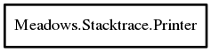

Meadows.Stacktrace.Printer – vala-stacktrace Reference Manual
Packages
vala-stacktrace
Meadows
Stacktrace
Printer
hide_installed_libraries
Printer
print
Printer
Object Hierarchy:

Description:
public
class
Printer
Namespace:
Meadows.Stacktrace
Package:
vala-stacktrace
Content:
Properties:
public
bool
hide_installed_libraries
{
set
;
get
; }
Creation methods:
public
Printer
()
Methods:
public
void
print
(
Stacktrace
trace)
Print the stacktrace to stdout